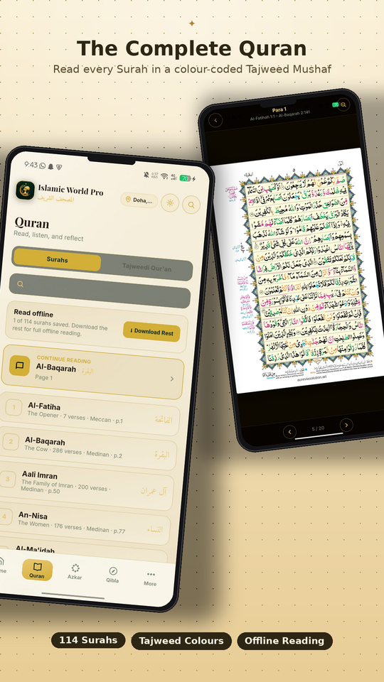
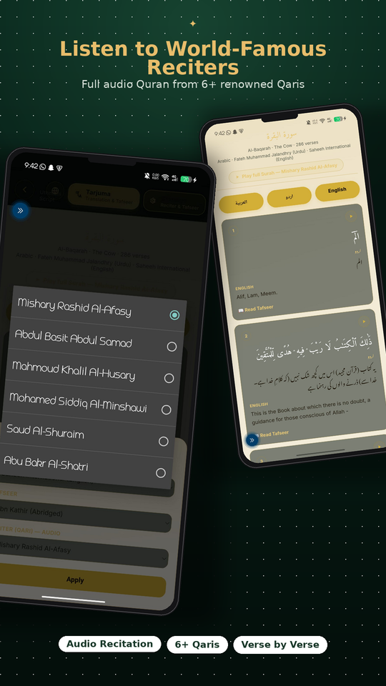
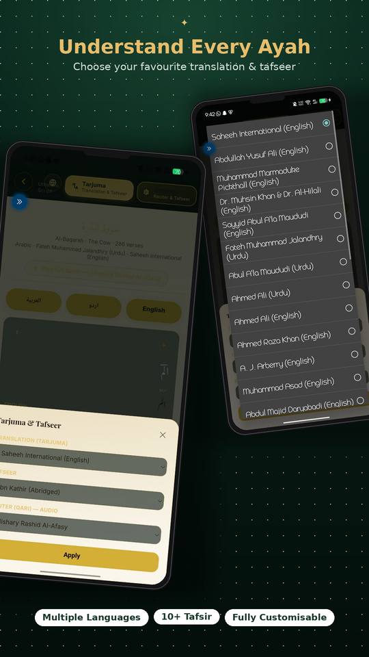
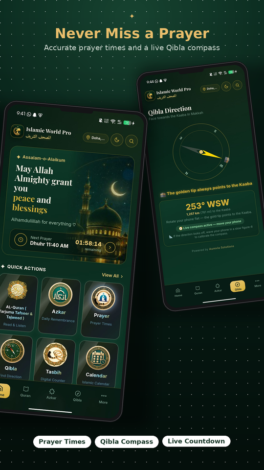
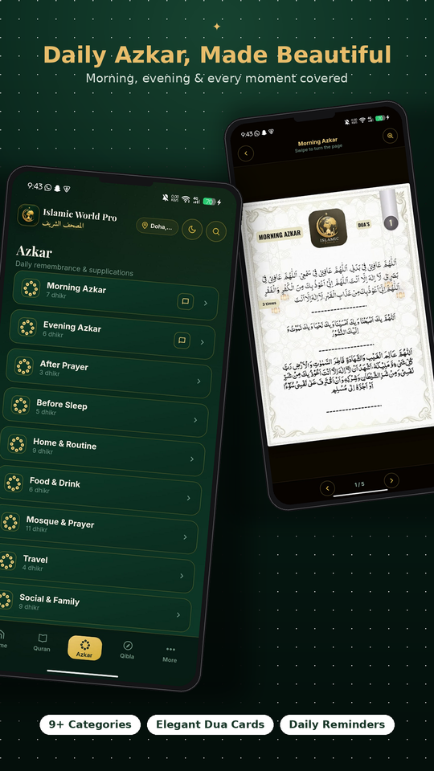
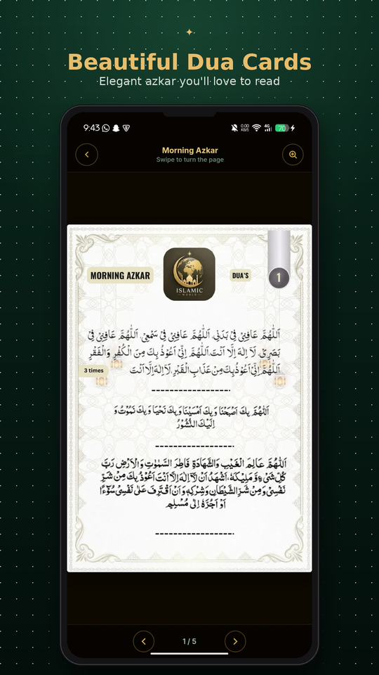
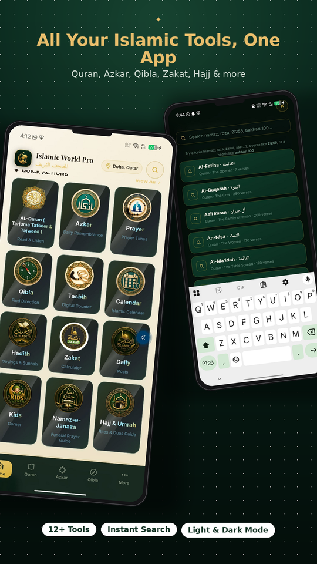
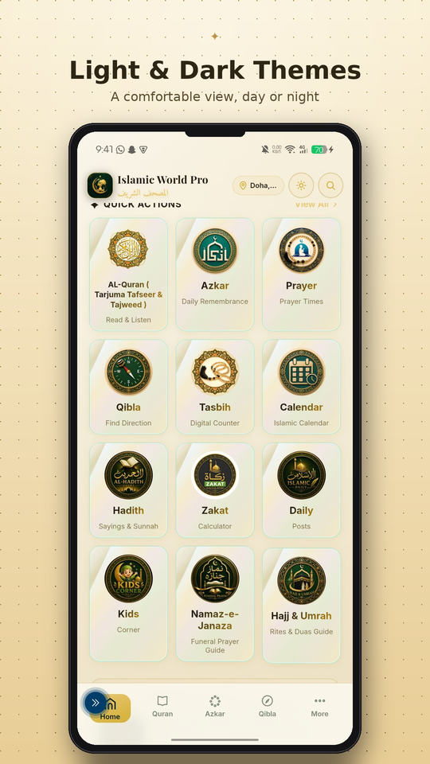

One quiet place for the Qur'an, your prayers, and your daily remembrance.
Prayer times, Qibla direction, the full Qur'an with Tajweed colouring, Azkar, Duas, Hadith, Tasbih, Zakat, Hajj & Umrah guidance, and a dedicated Kids Corner — all in a single app built to work even when your connection doesn't.
- Qur'an
- Prayer Times
- Qibla
- Azkar
A day held together by five moments
Thirteen tools, one calm app
No separate apps for Qibla, Tasbih, or Azkar. Islamic World Pro keeps your whole daily practice under one roof.
Qur'an
Clean, distraction-free Mushaf layout with Tajweed-marked pages.
Qibla Direction
Live compass to Makkah using your phone's sensors, GPS-accurate.
Prayer Times
Fajr to Isha, calculated for your exact location, with Adhan alerts.
Azkar, Morning & Evening
Structured daily remembrance sets, plus a dedicated Sleep Azkar list.
Dua Collection
A curated library of supplications for everyday situations.
Tasbih Counter
A built-in digital counter for dhikr — no separate app needed.
Hijri Calendar
Islamic dates and events, always in view alongside the Gregorian date.
Hadith
Browse authentic collections alongside your daily reading.
Zakat Calculator
Work out what you owe on cash, gold, and savings in a few taps.
Hajj & Umrah Guide
Step-by-step rites in Arabic, transliteration, Urdu and English.
Kids Corner
Short surahs, dua cards, Prophet stories and a quiz for children.
Janaza Guide
The funeral prayer and rites, ready for the moments they're needed.
A look inside Islamic World Pro
Real screens from the app — the Qur'an, prayer, Qibla, Azkar and more.








Read the Qur'an the way it was meant to be recited
Every page follows a clean Mushaf-style layout. Tajweed rules are colour-coded directly into the text, so correct pronunciation is something you notice, not something you have to memorise separately.
- Tajweed colour-coding across all 30 Juz
- Distraction-free reading, no ads between pages
- Keeps your place, even offline
وَقُرْآنًا فَرَقْنَاهُ لِتَقْرَأَهُ عَلَى النَّاسِ عَلَىٰ مُكْثٍ
"…and a Qur'an which We have separated [by chapters] that you might recite it to the people over a prolonged period."
Surah Al-Isra, 17:106
Duas for every moment, not just the big ones
Waking up, leaving the house, eating, travelling, feeling anxious — Islamic World Pro has an authentic dua ready, laid out on elegant, easy-to-read cards instead of a wall of plain text.
- Arabic, transliteration and translation together
- Organised by moment: home, food, travel, sleep & more
- Swipeable cards designed to actually be read
From install to your first Adhan
No account, no setup wizard — just a calm app that's ready when you are.
Install & open
Islamic World Pro loads instantly — no sign-up, no onboarding forms.
Allow location (optional)
Enables accurate prayer times and a live Qibla compass. Deny it and the app still works, defaulting gracefully to Makkah.
Everything downloads once
The Qur'an, Hadith, and Duas are cached for full offline access after the first load.
Your day, held together
Adhan alerts, Azkar reminders, and your Tasbih count are all there the moment you open the app again.
Prayer times & Qibla, explained
No. Once your location is set, prayer times and Adhan alerts continue working offline.
The app falls back gracefully to Makkah as a default, so it still functions — accuracy for your local prayer times simply improves once location is enabled.
On Android 12 and newer, exact alarms and battery optimisation can silently block notifications unless permission is granted. Islamic World Pro prompts for both directly inside the app.
Yes. It's free to download, with no account required to get started.
Bring your daily worship into one app
Free to download. Works offline once loaded. No account required to get started.